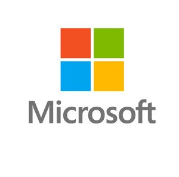

Microsoft came to our campus for the SWE-1 role. A total of 300+ students applied for its recruitment drive. I was also one of the applicants. Round-1: Round 1 was an Online Test for a duration of one hour. It was hosted on the Codility platform, which is generally used by Microsoft. It had two coding questions based entirely on DSA. Although the topics involving the questions were a bit on the difficult side, the questions were relatively easy. After Round 1, Microsoft shortlisted around 30 students for the interview rounds. Round 2 (Technical Round): Round 2 was technical in nature. It was held on Microsoft teams. The interviewer greeted me and asked me to tell him about myself. It is a good idea to have a proper introduction written and practiced beforehand. Make sure that you always end your introduction with a project or a work experience that you are confident in. The interviewer generally asks a follow-up question on that. This way you can guide the interviewer to a topic you are comfortable with. I was asked two questions related to DSA: The first question was to find an element in an m x n matrix, sorted row-wise and column-wise. You can find the question here: https://www.geeksforgeeks.org/search-in-row-wise-and-column-wise-sorted-matrix/ . I was asked to come up with the most optimized approach, i.e. in O(m+n) time complexity, and write the code for it. I started with a brute-force approach and worked my way to find an optimized solution which I eventually reached. I dry ran my code with sample test cases, which were passed. He was satisfied with my answer. The second question was a previous year’s Microsoft question, the Gas Station problem: https://leetcode.com/problems/gas-station/ . I was asked to just explain the logic and pseudocode for this question. I explained it using sample test cases and he was satisfied with my answer. He was done with his questions as the time was up and asked me if I had any questions for him. After a while, I was called for Round 3. Round 3 (Technical Round): Round 3 was also technical in nature. The interviewer asked me to tell him about myself and asked follow-up questions about my previous internships. He then proceeded to ask me questions related to Object Oriented Programming concepts. What are abstract classes and interfaces? Which of them provides more abstraction? How would you implement Multiple Inheritance in Java and C++? He asked me questions related to Inheritance Upcasting and Down-casting in Java. He asked me a DSA question after this, which was very easy. A total of 10 students were selected for the final round. Round 4 (AA Round – Technical + HR): The AA round is the final round in any Microsoft interview. It is conducted by a senior official from Microsoft and its main aim is to verify the evaluations of the previous interview round and ask some HR questions. The interviewer asked me to tell him about myself and asked some detailed questions related to my internship. He then gave me a DSA question: Given a number N, and a sorted array A, find the possible combinations of the elements of A that add up to N. The numbers can be repeated at any time and there is no constraint on the size of the combination. I was able to give a semi-optimized approach but I struggled with the optimized solution. Even though he gave me a few hints, I was unable to find the most optimized approach. He then proceeded to ask me some HR-related questions which were majorly situation based. For any situation-based question, it is best to follow the STAR approach: Situation, Task, Action, Result. I was asked about the time I felt like a failure, and how I rose from it. Just take any real experience from your life (preferably) and break it into STAR components. He then asked me if I had any questions. Microsoft recruited two students from our campus. Although I was not one of them, I thought that the interview experience was worthy enough to be shared, as most of the interview experiences from GeeksForGeeks helped me plan my approach toward the placements of any company. Final Notes: Prepared topics like DSA and OOPs concepts thoroughly. Most questions are asked from here and your approach will be appreciated more than the final answer. While ideating a solution for a DSA question, make sure that you think out loud as this help the interviewer know about your thought process and your decision-making skill. It also keeps the interviewer interested and engaged. For any situational HR question, always use the STAR method to answer, as it is the most accepted convention and clearly provides the information the interviewer wants to know about you. The interviewers are generally friendly and make you feel comfortable while giving the interview. If you are stuck on a question, you can always ask for hints for proceeding further.
Microsoft Interview Experience - SWE Full Time (2023)

Let's Talk
Do you want to learn more about how I can help your company overcome problems? Let us have a conversation.